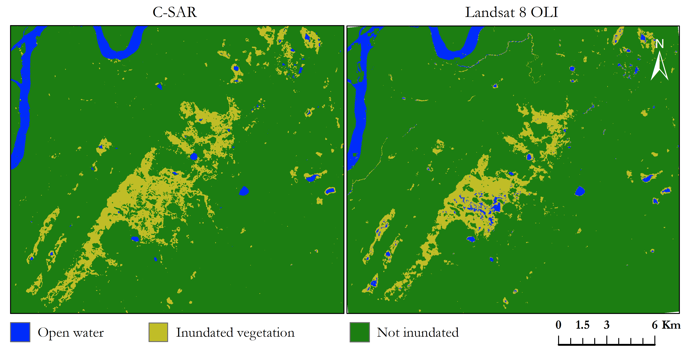
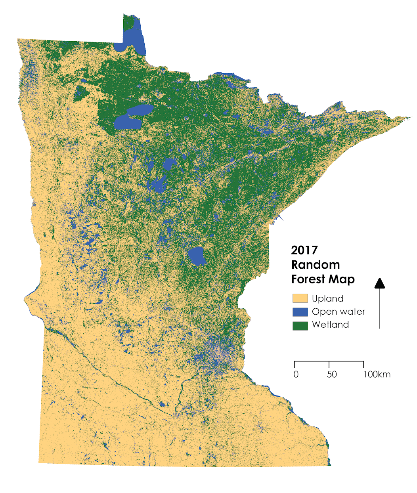

NASA DEVELOP
May 4, 2020DEVELOP is a capacity building initiative under NASA’s Applied Sciences Program. As a participant, I undertook research projects that focus on the utility of earth observations in alleviating environmental issues.
Projects
Assessing Coastal Water Quality in Belize’s Coral Reefs
This project focused on creating a Google Earth Engine dashboard to extract chlorophyll and turbidity metrics from Sentinel-2 and Landsat 8 optical datasets.
Alaska Ecological Forecasting

Wetlands are ecosystems that experience seasonal or permanent inundation. These features are difficult to map using conventional methods involving aerial photography due to their temporal variation, canopy cover, and cloud cover.
Our team produced an inundation mapping tool that will be integrated with the Alaska Satellite Facility’s SAR data archive. This will allow for the automated generation of inundation maps to be used by end users, such as the USFWS National Wetlands Inventory. Due to missing ground truth data, I created a tool in Google Earth Engine to generate wetland maps based on DSWE. We used this as a proxy for validation data to calibrate our SAR inundation tool parameters.
Great Lakes Water Resources

This project involved the creation of Google Earth Engine tool to generate statewide wetland maps. We used both SAR and optical datasets to derive a variety of vegetation and inundation indices before performing an object-based random forest classification.